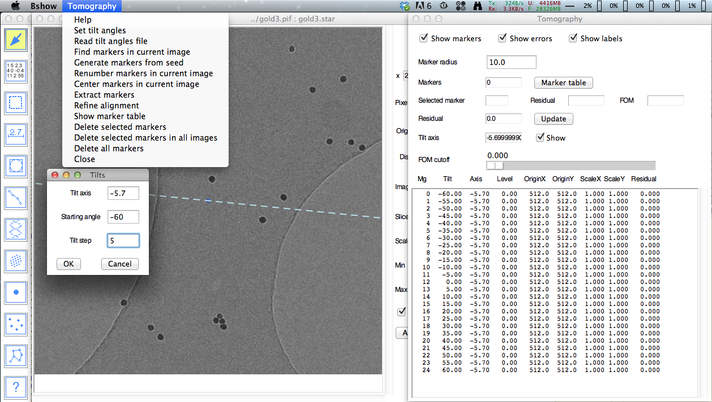
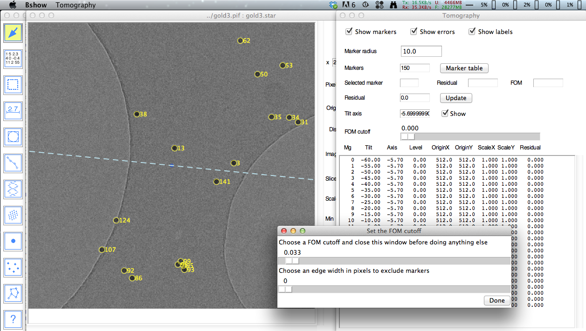
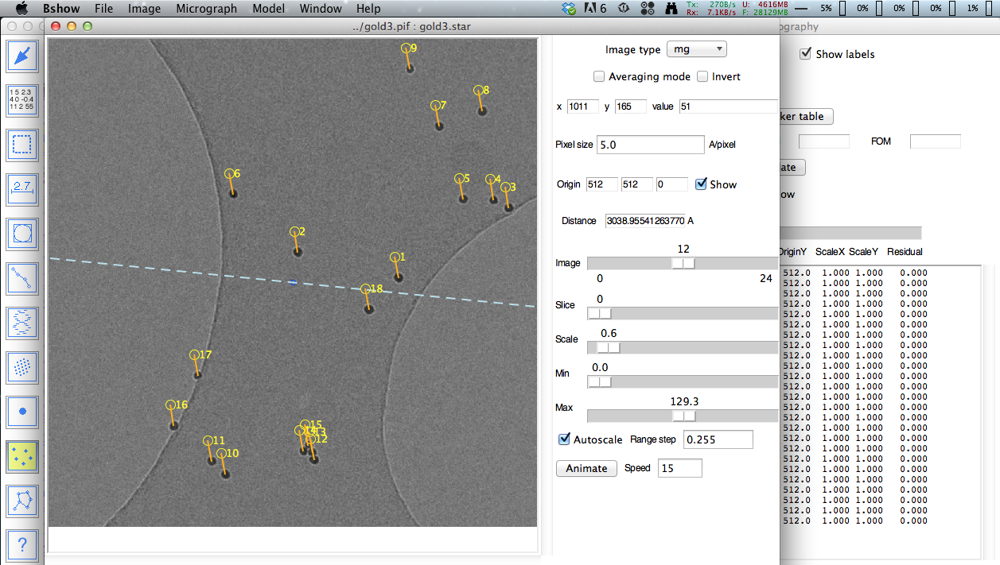
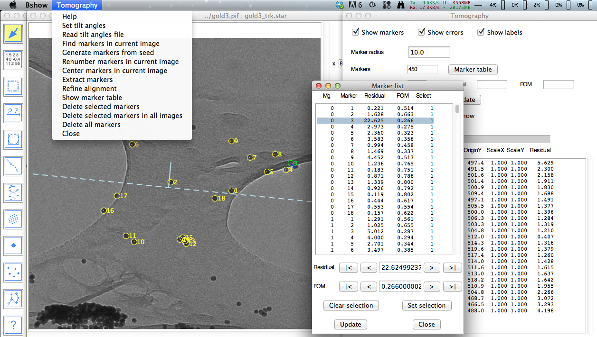

Tomography operations are activated by selecting the
"Micrograph/Tomography" menu item or the tomography tool (Dot icon).
The second tool is used to select more than one marker to shift.
This dot icon tool brings up a new window with a
menu "Tomography" and parameters:
- Tomography
- Help - link to documentation.
- Set tilt angles - open a dialog box called "Tilts" to set a tilt series giving the start angle and the constant increment.
- Read tilt angles file - read a *.rawtlt file as generated by some tomographic acquisition packages.
- Renumber markers in current image - ensure contiguous marker numbering.
- Center markers in current image - center the marker set in the image.
- Extract markers - extract all fiducial markers into a multi-image file for further processing.
- Show marker table - open the marker table window.
- Delete selected markers - delete all selected markers.
- Delete selected markers in all images - delete selected markers in all micrographs.
- Delete all markers - delete all markers in memory (no recovery!).
- Close - close window and deactivate tomographic operations.
- Workflow
- Normalize images - set the images to the same dynamic range.
- Find markers in current image - automatically find markers (uses the "Marker radius" parameter).
- Generate markers from seed - calculate a model and missing markers.
- Find tilt axis - do a brute force search for the tilt axis angle.
- Track markers - locate the markers in all images.
- Refine alignment - refine marker locations and micrograph orientations.
- Calculate and fit power spectra - calculate tiled and averaged power spectra and do an initial fit.
- Estimate resolution - calculate a FSC curve for each micrograph.
- Reconstruct - do a reconstruct with optional CTF correction.
- Denoise - denoise the reconstruction.
- Parameters
- Radiobuttons to display/hide markers, errors and labels.
- Marker radius - sets the radius for fiducial markers used for drawing circles and finding markers by cross-correlation.
- Markers - indicates the number of markers and a button to show the marker table.
- Selected marker - indicates the currently selected marker, its residual, its figure-of-merit, and a button to refine it.
- Residual - shows the latest calculated marker location resdiual and a button to update it.
- Tilt axis - an editable tilt axis angle defined as a rotation from the x-axis, with a radiobutton to show it.
- Previous/Next micrograph - buttons to navigate micrographs.
- FOM cutoff - a slider to show only those markers above a cutoff.
- Table - an editable list of micrograph parameters.
Setup for tomography
The tilt series must be read into bshow as a multi-image file (PIF,
Spider or Imagic formats). Next the marker radius in pixels is set,
followed by the tilt axis angle. The tilt axis angle is defined with
respect to the x-axis and must be known to within a degree. The tilt
angles can be read from a text file with a list of angles ("Read rawtlt
file" menu item), or can be set using the "Set tilt angles" menu item.

Picking seed fiducial markers
To pick the initial fiducial markers, go to the zero-degree tilt micrograph and use the "Tomography/Find markers in current image" menu item. A synthetic disk based on the marker radius is used to find markers by cross-correlation, which may take several seconds. A dialog box then opens with two sliders for selection of markers. The top slider allows the user to select a FOM cutoff while the bottom slider allows the user to eliminate markers close to the micrograph edge. Once these parameters have been selected, click on the "Done" button.
The best strategy is to pick all the markers (even in clusters) but not too close to the edge. The tracking algorithm generates a synthetic image of the markers considering the micrograph tilt angle. This image is then correlated with the micrograph. The more representative the synthetic image is of the markers in the micrograph, the better the cross-correlation works.

Correcting marker positions
Markers can be picked (when the tomography dot tool is selected) and positioned individually, or all the markers in the current micrograph can be moved together when the second tomography tool (multiple dots icon) is selected.
Jumping to significant markers
The marker table can be opened from the "Marker table" button or using the "Tomography/Show marker table" menu item. The buttons can be used to jump to the smallest ("|<"), next largest ("<"), next smallest ">"), or largest (">|") marker with respect to its residual or FOM. The FOM's are the correlation coefficients for the markers generated during tracking or position refinement.

Mouse controls for marking
The mouse behavior depends on the tool selected:
Pointer tool:
- Left/middle button: move a marker
- Shift - left/middle button: delete a marker
Clicking the left or middle mouse button in a marker grabs it for dragging.
To delete a marker, hold down the shift key and click the left or middle button on the marker.
Marker tool:

- Left/middle button: create or move a marker
- Shift - left/middle button: delete a marker
Clicking the left or middle mouse button in a marker grabs it for dragging.
Clicking the left or middle mouse button in an empty region on the image creates a new marker.
To delete a marker, hold down the shift key and click the left or middle button on the marker.
Multiple markers tool:

- Left/middle button: select region or move selected markers
Clicking the left or middle mouse button in a marker grabs all selected markers for dragging.
Clicking the left or middle mouse button in an empty region and dragging it creates a rectangle within which all markers are selected. The selected markers can then be dragged by grabbing one of them.
Reading and saving tomographic parameters
The "Micrograph/Read parameters" and "Micrograph/Write parameters" menu items are used to read and write parameter files (usually in the STAR format).